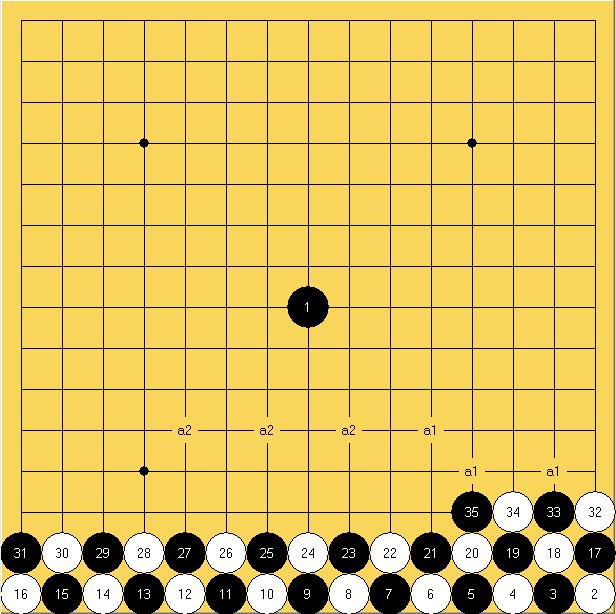

10步VCF
首页
习题专区
#1 10步VCF 作者：越狱行辕 发表时间：2009-8-30 21:50:33
=======上图对应的爱五子棋谱代码如下，以便你拆解：========
h8o1n1m1l1k1j1i1h1g1f1e1d1c1b1a1o2n2m2l2k2j2i2h2g2f2e2d2c2b2a2o3n3m3l3
======================================================乱打 竟然打出个VCF习题。。。。挺有意思
#2 Re:10步VCF 作者：越狱行辕 发表时间：2009-8-30 21:52:11
饿 貌似8步也杀
#3 Re:10步VCF 作者：耳痛 发表时间：2009-8-30 22:11:34
=======上图对应的爱五子棋谱代码如下，以便你拆解：========
h8o1n1m1l1k1j1i1h1g1f1e1d1c1b1a1o2n2m2l2k2j2i2h2g2f2e2d2c2b2a2o3n3m3l3l4k5m5k3n4o5m4
======================================================
#4 Re:10步VCF 作者：耳痛 发表时间：2009-8-30 22:16:38
=======上图对应的爱五子棋谱代码如下，以便你拆解：========
h8o1n1m1l1k1j1i1h1g1f1e1d1c1b1a1o2n2m2l2k2j2i2h2g2f2e2d2c2b2a2o3n3m3l3k5l4i3j4h4g5g3i5e5f4d4c3e3c5h3f3k3j3h6
======================================================上个不是VCF 这个是了
#5 Re:10步VCF 作者：wd1988 发表时间：2009-8-31 13:58:38
这个也是哦，不过有12步VCF
=======上图对应的爱五子棋谱代码如下，以便你拆解：========
h8o1n1m1l1k1j1i1h1g1f1e1d1c1b1a1o2n2m2l2k2j2i2h2g2f2e2d2c2b2a2o3n3m3l3k5l4j4i3i5k3g3h4f4e5g5e3j5h5m5l5n4o5l6k7m7n8m6
======================================================
#6 Re:10步VCF 作者：团子亲卫队 发表时间：2009-8-31 15:20:00
在左边单做一步也杀
